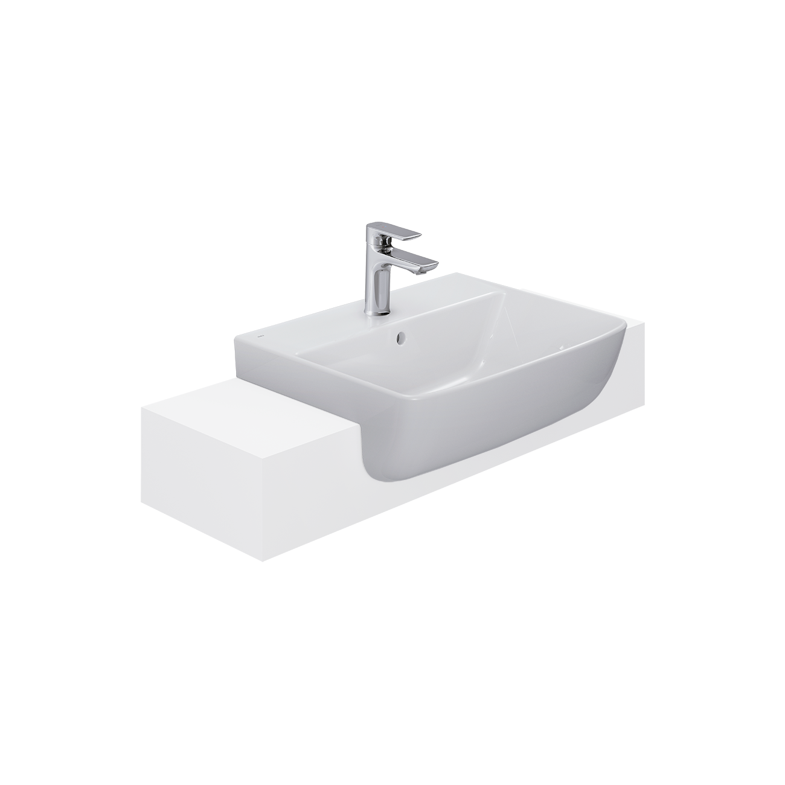
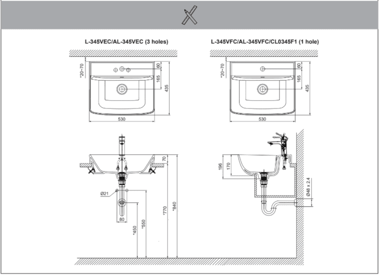

Chậu rửa bán âm L-345V là giải pháp thông minh khi kết hợp giữa thiết kế tinh tế và tối ưu hóa công năng, mang đến sự tiện nghi, sang trọng cho phòng tắm, nhà vệ sinh hiện nay.Đặc điểm nổi bật của chậu rửa bán âm L-345VThiết kế bán âm bàn giúp tối ưu không gianChậu rửa bán âm INAX L-345V được thiết kế theo kiểu bán âm bàn - phong cách hiện đại đang được ưa chuộng hiện nay. Với kích thước 435 x 530 x 196 (mm), sản phẩm không chiếm nhiều diện tích mặt bàn, tạo cảm giác gọn gàng và rộng rãi hơn cho không gian phòng tắm, phòng vệ sinh vừa và nhỏ.Ngoài ra, sản phẩm có đường bo góc mềm mại mang lại vẻ đẹp tinh tế, sang trọng, thanh lịch và tạo cảm giác thoải mái khi sử dụng.Đa năng và tiện lợiPhần đế bàn chậu rửa bán âm L-345V được thiết kế phẳng giúp hạn chế tích tụ bụi bẩn và cặn nước, giúp người dùng dễ dàng vệ sinh. Bên cạnh đó, người dùng cũng có thể tận dụng khoảng không gian này để đặt những vật dụng nhỏ như xà phòng, nước rửa tay, giúp khu vực chậu rửa luôn gọn gàng và sạch sẽ.Lòng chậu L-345V được thiết kế sâu, mở rộng không gian sử dụng giúp hạn chế nước bắn ra ngoài sàn nhà. Ngoài ra, sản phẩm còn được trang bị lỗ xả tràn tiện lợi, ngăn ngừa tình trạng nước tràn ra ngoài khi quên tắt vòi, đảm bảo vệ sinh và hạn chế thất thoát lượng nước đáng kể.Chất liệu cao cấpChậu rửa bán âm L-345V được làm từ chất liệu sứ cao cấp, đạt tiêu chuẩn khắt khe của INAX - thương hiệu thiết bị vệ sinh cao cấp hàng đầu Nhật Bản. Bề mặt sứ trắng sáng, nhẵn mịn, dễ dàng vệ sinh và chống bám bẩn hiệu quả.Để tạo nên tổng thể hoàn hảo cho không gian phòng tắm, phòng vệ sinh, INAX gợi ý kết hợp chậu rửa L-345V với vòi chậu nước lạnh LFV-612S. Sự kết hợp này mang lại tính đồng bộ về mặt thẩm mỹ và đảm bảo tối ưu hiệu quả sử dụng. Đây cũng chính là những lựa chọn hàng đầu dành cho những ai muốn sở hữu không gian phòng tắm, phòng vệ sinh tiện nghi và hiện đại.Video khám phá thương hiệu INAXVideo giới thiệu bộ sưu tập INAX S200Bản vẽ lắp đặt chậu rửa bán âm L-345VXem hướng dẫn chi tiết tại đây.Thông số kỹ thuậtChất liệuSứKiểu dángBán âm bànKích thước435 x 530 x 196 (mm) (Sâu x Rộng x Cao)Đặc điểm nổi bật- Kiểu dáng: Dáng bán âm bàn sang trọng, hiện đại, tiết kiệm không gian với đường bo góc mềm mại mang đến trải nghiệm thư giãn - Đế vòi phẳng, hạn chế bám bẩn, có thể tận dụng đặt đồ nhỏ - Lỗ xả tràn tiện lợi - Lòng chậu sâu để sử dụng đa năngThương hiệuINAXMàu sắcTrắngKhác- Gợi ý sản phẩm đi kèm: Vòi chậu nước lạnh LFV-612S - Hotline tư vấn: 18006633
Chậu rửa bán âm L-345V
Chậu rửa thương hiệu INAX.
Đã cập nhật danh sách yêu thích.
DANH MỤC: Chậu rửa
MÃ SẢN PHẨM: L-345V
DEPTH: 196mm
HEIGHT: 435mm
WIDTH: 530mm
Chậu rửa bán âm L-345V là giải pháp thông minh khi kết hợp giữa thiết kế tinh tế và tối ưu hóa công năng, mang đến sự tiện nghi, sang trọng cho phòng tắm, nhà vệ sinh hiện nay.Đặc điểm nổi bật của chậu rửa bán âm L-345VThiết kế bán âm bàn giúp tối ưu không gianChậu rửa bán âm INAX L-345V được thiết kế theo kiểu bán âm bàn - phong cách hiện đại đang được ưa chuộng hiện nay. Với kích thước 435 x 530 x 196 (mm), sản phẩm không chiếm nhiều diện tích mặt bàn, tạo cảm giác gọn gàng và rộng rãi hơn cho không gian phòng tắm, phòng vệ sinh vừa và nhỏ.Ngoài ra, sản phẩm có đường bo góc mềm mại mang lại vẻ đẹp tinh tế, sang trọng, thanh lịch và tạo cảm giác thoải mái khi sử dụng.Đa năng và tiện lợiPhần đế bàn chậu rửa bán âm L-345V được thiết kế phẳng giúp hạn chế tích tụ bụi bẩn và cặn nước, giúp người dùng dễ dàng vệ sinh. Bên cạnh đó, người dùng cũng có thể tận dụng khoảng không gian này để đặt những vật dụng nhỏ như xà phòng, nước rửa tay, giúp khu vực chậu rửa luôn gọn gàng và sạch sẽ.Lòng chậu L-345V được thiết kế sâu, mở rộng không gian sử dụng giúp hạn chế nước bắn ra ngoài sàn nhà. Ngoài ra, sản phẩm còn được trang bị lỗ xả tràn tiện lợi, ngăn ngừa tình trạng nước tràn ra ngoài khi quên tắt vòi, đảm bảo vệ sinh và hạn chế thất thoát lượng nước đáng kể.Chất liệu cao cấpChậu rửa bán âm L-345V được làm từ chất liệu sứ cao cấp, đạt tiêu chuẩn khắt khe của INAX - thương hiệu thiết bị vệ sinh cao cấp hàng đầu Nhật Bản. Bề mặt sứ trắng sáng, nhẵn mịn, dễ dàng vệ sinh và chống bám bẩn hiệu quả.Để tạo nên tổng thể hoàn hảo cho không gian phòng tắm, phòng vệ sinh, INAX gợi ý kết hợp chậu rửa L-345V với vòi chậu nước lạnh LFV-612S. Sự kết hợp này mang lại tính đồng bộ về mặt thẩm mỹ và đảm bảo tối ưu hiệu quả sử dụng. Đây cũng chính là những lựa chọn hàng đầu dành cho những ai muốn sở hữu không gian phòng tắm, phòng vệ sinh tiện nghi và hiện đại.Video khám phá thương hiệu INAXVideo giới thiệu bộ sưu tập INAX S200Bản vẽ lắp đặt chậu rửa bán âm L-345VXem hướng dẫn chi tiết tại đây.Thông số kỹ thuậtChất liệuSứKiểu dángBán âm bànKích thước435 x 530 x 196 (mm) (Sâu x Rộng x Cao)Đặc điểm nổi bật- Kiểu dáng: Dáng bán âm bàn sang trọng, hiện đại, tiết kiệm không gian với đường bo góc mềm mại mang đến trải nghiệm thư giãn - Đế vòi phẳng, hạn chế bám bẩn, có thể tận dụng đặt đồ nhỏ - Lỗ xả tràn tiện lợi - Lòng chậu sâu để sử dụng đa năngThương hiệuINAXMàu sắcTrắngKhác- Gợi ý sản phẩm đi kèm: Vòi chậu nước lạnh LFV-612S - Hotline tư vấn: 18006633
DANH MỤC: Chậu rửa
MÃ SẢN PHẨM: L-345V
DEPTH: 196mm
HEIGHT: 435mm
WIDTH: 530mm